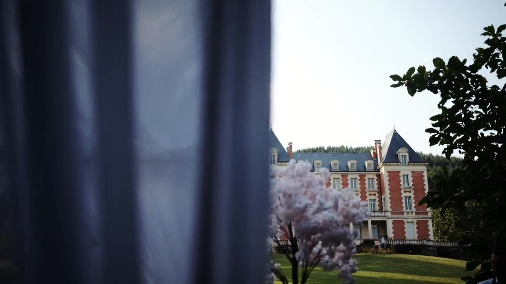
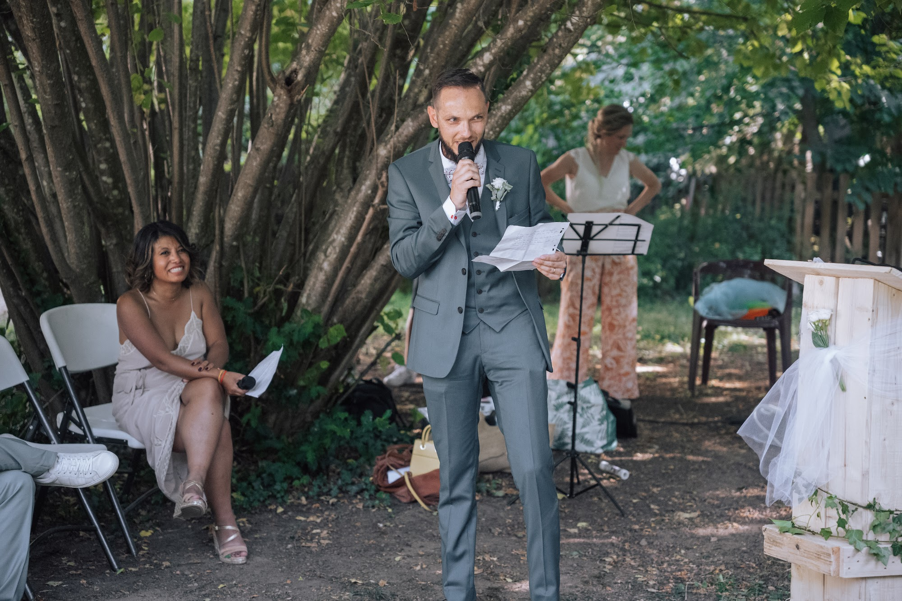

Wedding Videographer in Lyon: Choosing Between a Teaser and a Feature Film
As a wedding videographer near Lyon, France, I often discuss this specific topic during my first meetings with couples. Many wonder if they should prioritize a short, punchy video or opt for a longer, more detailed edit. It is a completely natural question when planning the memories of such a dense day. Let me break down both approaches to help you define which one will resonate most with how you want to relive these moments.

The wedding teaser: a burst of emotions
A teaser is essentially the cinematic trailer of your day. Its fast-paced and dynamic editing focuses on the visual intensity of the highlights. Set to an upbeat track, the shots flow rapidly to create an immediate adrenaline rush. This format, usually lasting between one and three minutes, condenses the smiles, the stolen glances, and the tender gestures. It is a time capsule that goes straight to the point and strikes with its energy.
This choice is particularly suited for sharing with your loved ones. You can easily watch it on a phone screen, send it to distant friends, or post it for those who could not attend. The goal of a wedding teaser is not to tell the exact chronological story of your schedule, but to convey the overall vibe of the event. The scenes intertwine organically. A burst of laughter during the morning preparations directly answers a wild dance move late at night.

The feature wedding film: your family legacy
The feature film offers a completely different breathing space. With an edit that often extends from ten to twenty-five minutes, or even more, it takes the time to set the scene and develop a linear narrative. This is the ideal format to include the speeches of your bridal party, the entirety of your vows, or the poetic in-between moments that link the main stages of the day. A film of this scale becomes a family heirloom that you watch comfortably seated on your couch.
I love letting the silences and the ambient sounds of the venues live within this format. Your wedding video in Rhone-Alps takes on its full documentary dimension here. The pace slows down, allowing you to dive back into the exact atmosphere of each moment without any rush. You rediscover details you might not have noticed on the wedding day, like the look on your parents' faces during the ceremony.

Audio and voices: the major difference
Sound management marks the clearest boundary between these two options. In a short video, the music carries almost the entire narrative. The images dance to the rhythm of the melody, and the transitions lock onto the beats. In a long film, the sound design becomes much more subtle and complex. Voices become the guiding thread of the final cut.
Hearing the shaking voice of a father delivering a speech resonates with particular strength years later. The bursts of laughter during the cocktail hour amidst the Beaujolais vineyards or the rustling wind in the trees add a unique audio texture. These auditory details give depth to your story and build a living archive, going far beyond mere moving pictures.
My shooting approach as a wedding videographer in Lyon
On the field, my approach remains strictly identical regardless of the final format you choose. I work very discreetly, observing natural interactions rather than directing scenes. My goal is to capture natural light and the spontaneous emotions unfolding in front of me. I will never ask you to replay an action for the camera or hold a stiff pose.
Whether you opt for a short or extended delivery, I film the entire day with the same editorial standards. I gather the necessary footage to tell your story in the most authentic way. From intimate preparations to the blurry motions on the dance floor, every sequence is designed to blend harmoniously into the edit, maintaining the elegant aesthetic I value.

Editing and color grading for a cinematic look
Once the footage is captured, the studio work begins. The culling phase is a meticulous step where I review every recorded second to select the most accurate shots. This selection requires strict discipline. I look for the shift in a gaze, the hand gently gripping a bouquet, the smile forming just before entering the town hall.
Color grading, which consists of working on the colorimetry of the image, gives your video its polished look. I favor warm tones, soft contrasts, and deep blacks that recall the feel of analog film. This treatment unifies the movie, visually linking the golden light of a late afternoon in the French Alps to the dimmer, candlelit atmosphere of an evening reception.

Matching the format to your timeline
The decision can also depend on the nature of your celebration. An event spanning a whole weekend, with many guests and majestic venues in Savoie or Haute-Savoie, provides very dense narrative material. The feature film allows to honor the diversity of the spaces and give a voice to everyone who prepared a speech.
Conversely, for a more intimate elopement in the Drome region, a condensed approach can sometimes be enough to capture the essence of the commitment. It is about analyzing the rhythm of your schedule. If you have planned lengthy speeches and strong rituals, the long format will naturally impose itself so you do not lose any of those precious words.
Teaser and feature film: the perfect combination
Very often, the ideal solution is to combine both formats. Receiving a teaser a few weeks after the wedding makes the wait easier and offers an immediate glimpse to your guests. You can relive the excitement of the day very quickly, while the emotions are still raw.
Later on, the delivery of the full film completes the experience. It is the document you will treasure, the one that will stand the test of time. Having both versions caters to all viewing moods, from a quick glance on a phone in the morning to an immersive screening on a large TV during your anniversaries.

Frequently asked questions
What is the ideal length for a wedding teaser?
A teaser usually lasts between one and three minutes. This short and punchy format maintains a very dynamic pace and holds attention from beginning to end, making it perfect for phone viewing.
Is a long feature wedding film boring to watch?
Absolutely not, if it is well-paced. A feature film alternates quiet moments, emotional speeches, and dynamic musical sequences to create a fluid narrative that keeps you engaged throughout.
Should we choose the music for our wedding video?
I generally select the music so it perfectly matches the rhythm of the edit and the energy of your footage. We do, of course, discuss your musical tastes beforehand to define the vibe that suits you.
How can we share our wedding film with guests?
I deliver the videos via a private, password-protected online gallery. You can simply send the link to your guests, and they will be able to watch the teaser or the full film directly from their browser.
Want to discuss the video format that will best highlight your day? Send me a message to talk about your wedding plans.
Let’s talk about your project